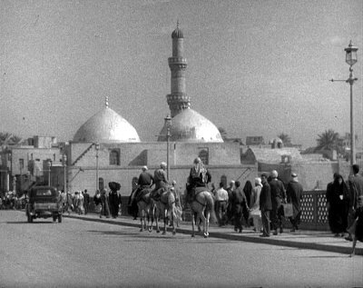
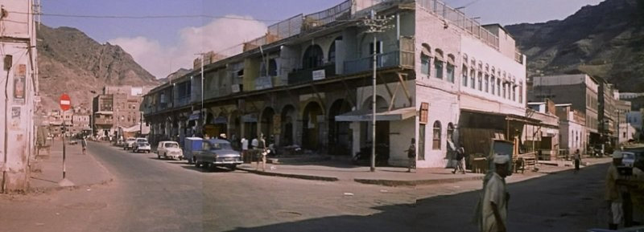

ARABIAN
PENINSULA
IRAQ
Baghdad
Al-Assafi Mosque, Asmai Street

DANGER MAN: To Our Best Friend
(Patrick McGoohan: 1965)
Stock shots establishing Bagdad and the Vincent’s apartment building.
(Identified by Sietse Postma, May 2022)
YEMEN
Aden

DANGER
MAN: Judgement Day
(Don Chaffey: 1965)
Establishing shot of Middle East country.

THE
CHAMPIONS: Desert
Journey (Paul Dickson: Spring 1968)
Establishing shot of a busy town.
(Identified by Dr S Straw, January 2012)
Return to Index